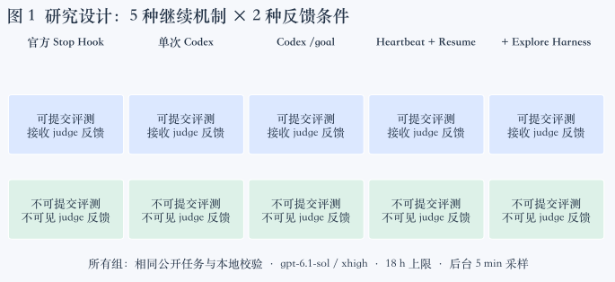
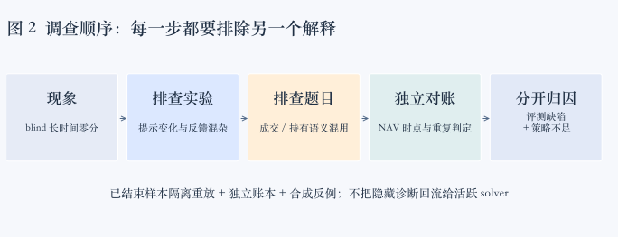
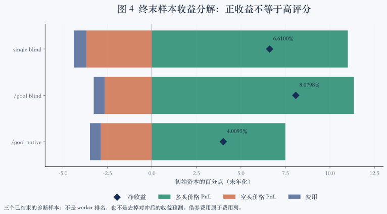
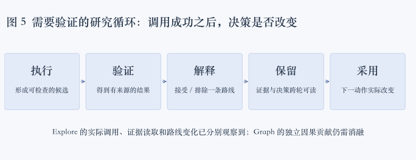

Ruiteng Huang · 研究札记 · 2026-10-05 · 基于真实轨迹、终末重放与合成反例
长程 Agent 的反馈与记忆
从 EdgeBench 的 blind 零分查起
我希望 LoopX 能让 Agent 完成更难的目标。但这轮实验首先教会我们的，是怎样识别“运行了很久，却没有形成有效研究”，以及怎样判断一个反馈信号是否值得相信。
我们给同一个模型配了不同的持续执行机制：官方 stop hook、单次 Codex、原生 /goal、LoopX heartbeat + resume，以及带 Explore Harness 的 LoopX。每种机制再拆成可获得评测反馈与无法获得评测反馈两组。在 Portfolio 题上，无反馈组一度长时间停在零分；LoopX 也没有显出预期的效率优势。
如果只看曲线，很容易得出两个判断：没有反馈，模型就不会做；增加管理结构，只会拖慢模型。但沿着轨迹、任务说明和评测器逐层检查，原因比这复杂得多。我们发现过自己的消融实现不干净，发现过题目与评分契约矛盾，也发现过 LoopX 让模型花时间完成并不必要的协议往返。与此同时，确实有策略在修正错误扣分之后仍然得零分。
1. 能力上限在前，效率在后，但两者需要同一套证据
我最近在 X 上写过，LoopX 尝试给长程 Agent 提供可以跨会话保留的结构化状态：目标、递归拆解的工作、决策和证据。首要目标是通过更慢、更充分的计划、实验、取证和修订，提高整个系统能完成的任务上限；之后再研究相同可验证结果下的计算、延迟和人类注意力成本。
Longer runtime needs feedback that changes the next action.
这句话包含两个需要分开验证的条件。首先，反馈要准确描述发生了什么；其次，系统要实际利用反馈改变决策。评分器把真实成交误判为造假，会破坏第一个条件。框架把错误恢复文案写得含混，让模型下一轮继续试同一组无效参数，会破坏第二个条件。两者都会表现成“Agent 跑了很久，结果没有改善”。
原帖引用了 Thore Graepel 关于 AlphaGo 的讨论：搜索、检验直觉与推演未来是重要组成部分。我并不据此把 LoopX 等同于棋类搜索，也不认为持久运行本身回答了 LLM 是否具备推理能力的问题。这里采取更可检验的工程目标：系统是否能完成更难的任务？结构和反馈分别贡献了什么？在可比预算下，这些贡献是否能够被观察和复现？
这次 EdgeBench 试跑提供了很直接的检验材料。一个长程框架可以拥有完整的 Todo、checkpoint、lease 和 evidence 字段，却仍在错误的目标代理、错误的评测信号或自己的控制协议上浪费时间。我们需要检查这些结构在决策链中的作用，而不能把它们的存在当作效果。
2. 用五种 worker 和两种反馈条件拆解问题
本轮主要研究 Portfolio Risk Calibration，同时用 BipedalWalker Locomotion RL 观察另一类训练任务。五种 worker 不是五个模型：基础模型统一为 gpt-6.1-sol / xhigh，主要变化是执行如何继续、状态如何保留，以及是否使用 LoopX 的探索能力。

| Worker | 保留的机制 | 需要验证的机制事实 |
|---|---|---|
| 官方 baseline | 沿 SForge 官方 stop hook 与继续路径 | 停止被如何处理、什么时候提交、是否真实继续工作 |
| 单次 Codex | 一次调用，无 stop hook 和外部续跑 | 模型何时自然结束；不能人为补一个循环再称单次 |
| 原生 /goal | Codex 自身的目标执行 | 原生目标如何结束/继续，不归因于 LoopX |
| heartbeat + resume | LoopX 准入、Todo、重规划、结算和同会话恢复 | 恢复的是同一 session；下一轮选择和结算确实生效 |
| + Explore Harness | 上述机制加证据记录与探索规划 | 证据被读取、解释、采用；不以配置开启代替使用证明 |
两种反馈条件共用任务、公开数据与基本迭代策略。native 组可以提交并阅读官方分数/诊断；blind 组不能主动提交或收到 judge 反馈，但仍可以使用公开训练数据、自建回测、本地测试和公开契约校验器。因此，更准确的名称是“无 judge 反馈”，而不是“完全没有反馈”。
后台对两组都每 5 分钟自动采样评测，研究者可以看过程曲线，blind solver 不知道这些结果。默认整场预算为 18 小时，不再设置独立的单轮时限。对于外部 worker，有可运行的后继工作时也不再人为插入轮间等待。预算是上限而不是保证消耗：单次调用提前结束，本身就是该配置的行为。
stop hook 是停止边界上的继续机制，不应未经核对就等同于“每轮必提交一次”。后台评测、主动提交、模型一次响应、LoopX 一个 Turn 是不同单位。页面上的采样记录数不能用来代替模型轮数或有效实验数。接入、worker 语义和终态展示分别见 #5591、#5600、#5618。
3. blind 零分首先迫使我们检查自己的实验
最初多个 blind 组长期为零。一个直觉解释是：模型没有获得外部奖励，因此缺乏优化方向。但在解释模型之前，我们先检查了包装提示。
结果发现，初版 blind prompt 除了删除提交入口，也删掉了“持续迭代”“保留当前最好版本”“失败尝试不扣分”等引导。这已经不是纯粹的反馈可用性消融。模型是否愿意持续尝试、何时写入可运行产物，也被一起改变了。修复时恢复了共同的优化提示，只替换不可用的 judge 提交/反馈部分，并开启新的 attempt；旧曲线保留为诊断材料。
这一步很容易被忽略。一次实验可以有相同的模型、相同的时间和相同的题目名称，却因一段外层包装而回答了不同的问题。网络隔离也不能仅靠提示“不要看分数”：blind 的提交入口被移除，worker 不获得 judge token/URL，网络只允许必要的模型 API；服务端还要拒绝主动提交和未授权的 auto-eval。公开文档区分了 反馈政策与 evaluator 隔离（#5635），不能把二者混为一个开关。
包装修复之后，零分问题仍值得追查。我们在多个 solver 的输出中看到 open_date == close_date。它们显然在按当日成交记账：买入、卖出、卖空、回补，各对应一次执行。但旧输出说明又用这些字段描述持有区间；评测把同日开平、零 return 的高比例视作异常，甚至清零核心得分。
同一天记录成交，并不意味着同一天买入又卖出。这个区别需要题目给出明确契约。把所有 solver 都要求“猜对评测器期望的解释”，在 native 模式可能会被反复试分掩盖，在 blind 模式则会集中暴露。

沿着这个线索，我们继续发现：评分奖励的高 Sharpe、低回撤与部分反欺诈阈值冲突；完整权重记录被一个未公开的最低投资比例判为不完整；scheduled 模型更新与额外风险再平衡共用一个间隔检查；仓位约束是否检查，竟然会受模型填写的事件标签影响。
这些问题被整理到 EdgeBench #14。最初的 diagnostic repair 保持其他评分边界，把缺乏直接会计证据的部分清零条件改成诊断；event-v1 则明确成为新任务变体，分开两个事件时钟，并对每个交易日检查仓位约束。它们都不是把已有低分重新解释成高分。
4. 比同日成交更深一层的问题：评分器是否在验证同一本账
第一轮修复后，我们继续分析已结束样本。我们没有让正在运行的 solver 看隐藏评测细节，而是冻结终末源码与提交摘要，在隔离环境重放评分。两个 blind 样本分别复现出 0 和 8.05 分。随后另写独立对账逻辑，不导入 solver 的计算函数，从真实成交、现金、持仓与成本逐日核对。
结果是：两个样本各 243 个交易日都可以对平。权益残差小于 4×10⁻⁹，NAV 残差小于 5×10⁻¹⁶，股数没有差异。这并不证明它们是好策略，但说明至少不能用不匹配的近似账本直接判定它们的真实账本错误。
4.1 收盘后权重不能拿来赚收盘前的收益
考虑一个不依赖策略的合成例子：初始有 100,000 现金。第一天资产价格为 100，第二天涨到 200。我们到第二天收盘时才买 100 单位，付出 20,000 本金和 10 佣金。买入之后立即按同一个收盘价估值，权益应为 99,990，NAV 为 0.9999。资产当天翻倍发生在买入之前，账户没有赚到这段收益。
旧重建函数用当日收盘后权重与当日收益相乘，得到约 1.199919992，并因此拒绝正确的 0.9999。真实样本中，同类问题把 1.06610051 重建为约 1.1331，形成 10 分扣罚。此外，基于权重变化估算佣金，会把价格漂移与真实换仓混在一起；实际滑点和跨周末借券费用也不能由这条近似式精确还原。

4.2 只校验最后一个 NAV，会遗漏中间路径
反方向也有问题。一个全现金账户，真实 NAV 应该始终为 1。如果报成 [1, 1.01, 1]，旧期末重建函数仍然通过，因为最后又回到了 1。中间凭空出现的收益却足以影响波动率、回撤、Sharpe 和风险校准。因此，“期末总钱数相等”远远不够；所有依赖路径的指标，都要求整条路径先有可信的经济来源。
4.3 相同成交签名不等于重复记账
另一个终末样本有 7 组相同签名。把日期、股票、方向、价格和数量拼起来，它们确实相同。但轨迹和账本显示，这是同日不同决策带来的独立成交：一次常规/风险更新之后，又有一次对冲调整。额外股数改变了持仓，现金发生了对应变化，费用也支付了。大部分额外成交为 1 股，一次为 4 股。
在这类场景中，签名相同可以触发调查，不能单独证明重复记账。反过来，允许模型填一个不同的 reason 或 ID 就绕过审计，同样不成立。需要同时检查唯一执行身份和经济效果：同一 ID 重复报送非法；新增一笔没有对应现金、仓位、费用变化的成交也非法；两笔确实独立且完整入账的同量成交应当通过。
4.4 版本化修复必须先明确会计约定
不能把针对两个既有 solver 的诊断适配器直接升级为通用评分器。它们采用的滑点和借券支付策略不同。新的公共契约必须先消除自由解释空间，再让 work image 与 judge 使用同一规则。
本轮 ledger-v2 明确：初始 1,000 万现金、零持仓；在每个交易日收盘执行；每笔按成交额收 5 bps 佣金和 1 bp 现金滑点；借券成本按前一收盘空头市值、4% 年率与 ACT/365 自然日计提，在下一交易日从现金扣除。跨零仓位拆成两条有序执行腿。每天都报告完整现金、整数股数、费用、权益、NAV 和权重。初始本金与费率是新实验约定，不追溯强加给旧结果。
NAVt = 权益t / 初始资本
权益t − 权益t−1 = Σ 股数t−1,i × 价格变化t,i − 佣金t − 滑点t − 借券成本t
校验从价格和执行重建账本，不能用报告里的 cash 或 NAV 反过来驱动计算。漏报/少报/重复费用、重复执行 ID、多报或漏报成交、修改股数、篡改中间 NAV、改权重、缺日期、重复日期、NaN 和错误库存转换都需要负例。合法同量成交、周末借券和无交易日也要有正例。
当前公共实现和配套镜像已经通过这组合成检查，包括 24 种账本/字段变异；真实 judge 入口在非法账本进入收益评分前给出零分和明确会计错误。它不宣判欺诈，也不意味着已经解决所有旧启发式评分规则。公共校验器不包含隐藏数据、评分入口或网络调用，blind 可以使用它验证公开数据上的契约。
5. 修好评测之后，低分仍可能是正确的
这是整次分析里最需要保留的反证。single blind 的账本可以对平，净收益也为正，但仅去掉错误的 NAV 扣分之后，其他表现的小计仍约为 −1.87，最终仍然被截到零。native /goal blind 去掉重复签名的 10 分误罚，会得到 18.05 的反事实值；我们没有把它回写成新成绩。

三个样本的净收益分别为 6.6101%、8.0799% 和 4.0096%。多头价格收益为正，空头价格收益和费用构成拖累。但题目要求对冲与风险控制，所以“删掉空头就好了”不是合理修复，更不能根据隐藏测试期表现给正在运行的 solver 定制建议。
同样，很多成交不代表成交佣金是主因。single blind 有 475 笔成交，其中 281 笔与对冲相关，这部分佣金却只有初始资本的约 0.0412%；借券成本约 0.4484%，占总费用约 0.7129% 的大部分。native /goal blind 的对应借券成本约 0.4410%，总费用约 0.6200%。把“交易次数”“换手率”和“真实成本”分开，才知道下一步应该验证什么。
single blind 的年化换手约 215%，在当前评分区间之外；两项 VaR 校准也得零分。它的优化器并非完全没考虑成本，目标中包含借券和换手项，但另一个对冲调整过程按权重带和风险可行性行动，不完全共享目标改善阈值。这提供了一个可以在公开训练数据上检验的策略假设，而不是由隐藏样本直接证明的根因。
因此，本轮任务修复只调整会计与评测契约；收益、风险和换手之间如何取舍，仍然属于 solver 的研究工作。不能为了“让 blind 看起来合理”而调分，也不能为了保住某个框架的结论而删掉失败样本。
问题分布：哪些属于评测，哪些属于长程运行
下表按问题所属的责任层次归类，避免把所有低分都归到模型、LoopX 或 judge 的某一方。“已观察”描述实际证据范围，“可能覆盖”描述共享代码路径；后者不是发生频率。各组轮次、版本和终末样本数不齐，因此这里不计算故障率。
| 层次 | 具体问题 | 实际证据 / 影响范围 | 处理与来源 |
|---|---|---|---|
| 实验设计 | blind 同时丢失持续迭代提示 | 初版 blind 包装；五种 worker 共用该构造，不表示每个模型都因此停止 | 恢复共同提示，新 attempt；#5591 |
| 实验隔离 | 无反馈不等于没有后台评分 | native/blind 共用 auto-eval；agent 可见反馈必须独立限制 | 命令、凭证、网络、服务端资格检查；#5635 |
| 任务与评分 | 同日成交误读为同日开平 | 多个 Portfolio 输出；native/blind 共用旧契约 | 执行与持有记录分开；EdgeBench #14 |
| 任务与评分 | 奖励阈值与启发式清零冲突 | 真实 judge 的合成边界反例；不是所有样本都触发 | 部分条件降为诊断；EdgeBench #14 |
| 任务与评分 | 最低投资比例、标签决定仓位审计 | 合成相同权重、改变标签即可改变扣分 | 移除未声明下限，仓位逐日校验；EdgeBench #14 |
| 任务与评分 | scheduled / risk 事件时钟混用 | 真实 judge 日历反例；Portfolio 公共契约 | event-v1 独立时钟与公开校验；EdgeBench #14 |
| 会计校验 | 权重时点错误、只验期末 NAV | 1 个 terminal blind 误扣样本 + 2 类独立合成反例 | ledger-v2 完整路径；EdgeBench #14 |
| 会计校验 | 同签名成交直接扣罚 | 1 个 terminal /goal blind 样本中的 7 组记录 | 执行身份 + 经济效果核对；EdgeBench #14 |
| 会话连续性 | 规划/heartbeat 重开 exec，换 Todo 丢失对话 | 共享 Codex 传输路径；原生 CLI 与两 Todo 实路径验证，非得分归因 | Goal/Agent 级精确 session 绑定；#5527 |
| 任务连续性 | 共享 Next Action 被其他 Agent 覆盖或旧步骤复活 | 真实 SQLite/File 路径与并发身份、旧依据反例；本轮单 worker 不能证明该并发故障发生 | Todo 绑定 receipt 与读取依据校验；#5531 |
| 重规划证据 | 早期有效结果被近期重复观察淹没 | 221 条合成观察 / 身份；显示最多 24 条、可按引用恢复；模型收益未证实 | 保留结果/路线差异，单独呈现 Goal；#5536 |
| 调度与恢复 | 可运行后继仍主动等待 | 外部 LoopX lane；修复后 4 组 / 9 个边界读回 | 即时重新准入；#5617 |
| 协议可用性 | claim 试错、无条件 worktree 提示 | LoopX 轨迹；共享提示影响不止 benchmark | #5586、#5604、#5623 |
| 协议可用性 | 已知 replan 仍要求失败重入 | 1 条详细 resume-blind 轨迹；App / CLI 合成实路径复现 | #5624、#5628 |
| 状态结算 | checkpoint/vision 恢复与结算文案不一致 | LoopX writeback 路径；部分问题先由本地协议复现发现 | #5573、#5629、#5633、#5640 |
| 能力采用 | Explore 已开启但普通轮缺入口 | 两个 Explore 设置；后续观察到读取、记录与路线改变 | 共享 hook 与统一 Harness；#5610 |
| 上下文传输 | 大 packet、截断后重复取准入 | 保存的真实 packet 与截断恢复；字节优化不等于效果提升 | 同 Turn 完整 capture，TurnEnvelope 待 receiver 实测；#5638 |
| 模型与工具 | 同补丁 Delete/Add 同一路径 | 2 个 blind 首轮，约 235 / 251 秒后重试恢复 | 工具契约问题；不算调度失败，不声称有专属 LoopX 修复 PR |
| 策略研究 | 高换手、校准不足、保守联合筛选 | 3 个 terminal 收益归因 + 1 条 Explore 候选链 | 任务内研究问题；不改评分来补偿，不向活跃 solver 泄露隐藏诊断 |
| 待验证假设 | 长期运行淡化真实目标注意力 | 存在程序性 core_goal 弱点，也有模型明确重读目标的反证 | 计划独立目标锚点消融；尚不能当作已定位根因 |
6. LoopX 的真实问题，怎样把额外结构变成额外负担
Benchmark 的问题不替 LoopX 开脱。轨迹中有一批很具体的控制协议问题，它们无需等待最终评分就能复现，也有明确的修复边界。
6.1 明知需要重规划，却先给模型一个必然失败的选择
一个 blind resume 的第二轮，guard 已经返回 autonomous_replan，同时要求显式选择 Todo。模型选择现成 successor 后，却收到 deferred，要求去掉 todo-id 再重入；下一次才拿到同一 wake 的 replan 结算身份。三个关键时间点相隔约 37 秒，之后模型还要读 vision detail 才继续。
这不是会话丢失，也不是死锁：系统最终自恢复了。但首次返回已经知道必须重规划，仍让模型先执行一个不能直接兑现的动作，是可以消除的协议往返。#5624先修外部 CLI 显式 Todo 选择的生效路径；#5628再修已知 replan 的接续。修复保留重规划义务、fresh gate、身份和幂等性，没有把 false 一律当作可自动重试，也没有降级成普通 delivery。
6.2 resume 生效，不等于这轮已经结算
这条线还有一个更早的修复：#5527。旧 runner 在规划、heartbeat 和正式执行之间重新启动 exec，且会在换 Todo 时失去对话连续性。修复让同一个 Goal/Agent 的规划和执行复用同一个原生 Codex session；Todo 可以切换，但原有研究对话不必因此重开。会话绑定与结算绑定被明确分开：前者维持上下文，后者仍由当前 Todo、Turn 和权限约束。
这里的关键不只是把一个 ID 存下来。绑定损坏、运行配置不兼容或恢复后出现意外的新 ID，都不能静默当作成功 resume；观察到 session 的超时也不自动代表取得进展。PR 的真实入口验证使用原生 Codex CLI 0.160.0 连接可控 Responses 端点，读回规划到 heartbeat 的历史，并通过公开 Turn CLI 完成两个分别结算的 Todo。它证明接续机制，不是在线模型的得分增益；benchmark 的 fresh 默认值在该 PR 中也没有被悄悄改掉。
我们按 session ID 和实际后续操作验证恢复，避免把“启动了一个新进程”当作 resume。后来的四个 LoopX 组各自保持一个 Codex session；一次明确样本中，上一轮 writeback/spend 完成约 4.894 秒后，同 session 开始下一轮。另一份快照记录了 9 个完成到下一任务开始的边界，范围 4.894–5.997 秒，中位数 5.746 秒。
这些时间戳证明观察到的边界没有原来的三分钟主动等待，不是 CPU 延迟基准，也不证明任意崩溃都能恢复。#5617把外部 worker 的 runnable 后继改成即时重新准入，外部等待、quota 和取消仍有独立语义。
结算本身也有边界。完成 Todo 不等于完成 Turn；writeback 后缺少 vision evidence，不能直接扣 quota。原协议在 checkpoint 恢复时存在不可用选项和误导性提示，已由 #5573、#5629、#5633逐步修复，#5636把 canonical settlement plan 保持为共同依据。
6.3 提示不准确，会让模型把研究预算花在协议猜测上
早期可反馈组曾连续试三种 todo claim 参数，相关恢复指引通过 #5586整合。另一个问题是，单 Agent 运行契约没有要求独立 worktree，heartbeat 文案却无条件要求迁移；模型随后切换目录、猜 lease 命令。#5604和#5623让工作区提示随真实契约变化，前者现在也已合并。
这类问题说明，可执行接口包含的不只是 CLI parser。模型读到的示例、参数位置、失败后的 repair action，同样是协议的一部分。一次返回既然已经携带足够的信息，就应当让模型完成当前动作，而不是靠试错找出系统已经知道的下一步。
6.4 有时浪费发生在工具边界，不能全算给内核
两个 blind 首轮都出现过一次 apply_patch 同时 Delete 和 Add 同一个 requirements.txt，工具拒绝整个补丁，导致主策略文件也没生成。两次轨迹里，从失败到改用可行写法分别间隔约 250.586 秒和 235.074 秒。
这是实测恢复间隔，不是测得工具本身执行了四分钟，更不能全计作 LoopX 内核 overhead。它可能包含推理、网络、其他判断与重试。另一个 Explore 重规划 wake 总共用了 555.646 秒，其中包含真实的成本/验收审计和证据写入；我们不能把一个选择修复 PR 宣称为“节省九分钟”。如果成本归因不准确，优化就会瞄错对象。
6.5 开启 Explore，却没有使用入口
最早开启 Graph/Harness 后，普通轮里模型主要看到配置字段，没有自然可用的入口。于是我们通过已有 capability hook 提供读取/规划指引，并把产品统一为 Explore Harness，Graph 成为其中的证据层；规划默认包含证据，Graph 仍可单独用。相关变更见 #5610。
权限没有被偷偷扩大。观测组的 spawn_allowed=false，它验证的是单 Agent 的证据和规划，不是多分支 worker 并行。调用 turn-context 只证明入口被采用；Graph 有节点也只证明记录存在。更强的验收是，下一次决策确实读到先前失败证据，并据此减少重复探索。
6.6 恢复同一个对话，还要接上正确的下一步
#5531处理的是另一种连续性：任务内的 Next Action 原先写在共享文本里，并发 Agent 可能覆盖彼此的后续步骤。模型即使恢复到自己的 session，下一轮读到的控制面建议仍可能不属于当前任务。修复将显式步骤更新绑定到已选 Todo 和当前 Agent 的既有 recommendation receipt，让 CLI、status、quota 和 Lark 从同一来源读回。
任务或读取依据变化后，旧修改应被拒绝并要求重新读取；系统也不会为了找到相同 Todo 而翻出更早的步骤，复活已经放弃的实验。原生宿主的继续提示仍保存在自己的日志中，不再隐式改写任务步骤。这里没有新增一个自由文本调度器：Next Action 无权自行选任务、授予 lease 或结算重规划。PR 通过真实 SQLite/File 路径验证了 Agent 隔离、旧依据拒绝、恢复和一次结算，但没有宣称已完成前端编辑器或多日模型效果验证。
因此，#5527 和 #5531 分别修复“接回哪段对话”与“继续哪个任务的哪一步”。这两层都正确，才有条件继续研究质量；两者都不等于研究质量已经提高。
7. 负证据、探索策略与目标注意力，需要比涨分更细的观察
负证据的入口也有一项先行改良：#5536。仅取最近几条历史，容易让早期有效结果被重复观察和其他 Agent 的新活动挤掉。该修复在重规划时分别呈现完整 Goal 与当前任务验收，先按 Goal/Agent 筛选，再折叠重复记录；在最多 24 条展示中优先保留不同结果和路线，附上精确证据引用与被省略历史的读取入口。
它直接回应“负证据怎样影响下一步”的前半段：先让相关证据有机会进入决策上下文，而不是要求模型每次额外履行一套诊断读取仪式。quota、PR review 和 handoff 共享 TypeScript 上下文所有者，Python 只适配来源读取。选取依据是类型化的结果、假设与探索路径字段，不是从一句“没有涨分”自动推断某种机制已经被证伪；真正的路线判断仍要由模型结合证据完成。
验证中，每个身份有 221 条合成领域观察，包含 180 条重复记录，并检验早期结果保留、不同路线、精确引用拒绝和省略历史恢复。这个结果不能直接写成“模型已经更会研究”：拥挤场景的 quota 输出反而由 26,844 增至 33,523 字符，约增加 25%；全量来源 IO 仍随历史增长。这是为决策完整性付出的已披露成本，也解释了为什么后续还要研究短 normal packet 与按需 replan context。

我们后来在 blind Explore 中观察到一条更有价值的链：模型读到两节点上下文，其中记录了某种全周期经验先验路线的问题；随后研究脚本显式排除这种先验，转向因果在线 alpha 家族。脚本比较了三类共 12 个变体，在五个公开训练年份上筛选，再将四个候选带到公开 warm/cold validation。
这支持“负证据被读取，下一路线相容地改变了”。但同一个 Codex session 和 successor Todo 也保存了相关信息，所以还不能把因果贡献单独归给 Graph。需要关掉 Graph 的配对实验，或测量无结构记忆的相同上下文条件，才能回答新增结构是否必要。
保守选择也是一个具体问题。后续九组强度/换手参数试验要求训练 Sharpe 不低于基线，且换手不高于基线；没有候选同时通过，于是都没进入下一层公开验证。这样的联合门槛可能把权衡空间缩成“所有指标同时改进”。但这批候选确实全部降低了训练 Sharpe 和收益，前一轮四个候选的 cold-start 验证也都变差。因此不能仅凭它们被拒绝，就说模型错误地不愿冒险，更不能暗示它们隐藏得分必然更高。
我更倾向于把“探索一个候选”和“提升为当前最好版本”分开。真实性、隔离和风险硬约束不变；保留 incumbent；为某些有明确权衡的候选留出预先限定的验证预算。采用什么任务相关的晋升标准，应当成为默认关闭、单变量的实验，而不是藏进通用内核或按一次涨分临时改写规则。
这也回应一个担忧：LoopX 是否会在长期运行中淡化真正目标，把完成 Todo 当成目标？目前轨迹有两面证据。一方面，模型会重新读题、列出收益/Sharpe/换手/对冲目标，并进行新实验，不能直接判定它忘了目标。另一方面，runner 某个高显著性的 core_goal 是“通过验证过的 Todos 完成 benchmark”这样的程序性描述；真实任务仍在任务文档、Todo 输入和 vision 中，但呈现位置不理想。
这是值得检验的目标表示缺口，不是已经证实的注意力衰减根因。后续可以比较带精简目标/验收锚点的 TurnEnvelope 与当前投影，保持模型、调度、评分与实验策略相同。不要一次同时加入目标卡、即时调度和新探索政策，再把收益归因给其中任何一个。
8. 更短的上下文，也需要保留正确决策
正常轮需要的是短增量：当前目标、选择、必要证据、下一条可执行命令。重规划需要更充分的历史：哪些路线失败、依据是什么、哪些假设失效。把两者都变成同一大包会浪费读取，把两者都压成一句话又可能丢掉决定行动边界的信息。
我们用真实保存的 packet 做了离线投影，而没有重跑活动 Goal。首轮三份 packet 的全量 compact 输出约 23.7–26.4 KB，TurnEnvelope 约 6.0–6.5 KB，减少约 75%；后续补齐完整 settlement plan 的两份 packet，约从 33–36 KB 降到 11–12 KB，减少约 65–67%。这是不同边界下的离线字节测量，不应混成一个数字。
验证重点不只是少几个字：显式选择、必要读取、写回命令、审批/权限边界与结算身份必须保留。压缩器也会忠实保留原本的权限文案矛盾，所以缩短包不能自动修好语义。#5638先保留完整 decision capture，让工具输出截断时可以读回同一 Turn 的 packet，而不是为了找回被截内容再做一次准入。
这里沿用现有 TypeScript owner 和 TurnEnvelope 契约，没有在 Python runner 中另造决策源。什么时候重新准入，是状态和权限发生变化的问题；什么时候读完整历史，是上下文需求的问题；二者不应混用。下一步需要实际 receiver 采用与决策正确性的验证，离线节省字节不能直接写成 token、延迟或得分收益。
怎样比较效果与效率
在相同时间内看 best-so-far 曲线很有用，但仍应同时报告：当前/最终产物的得分、首次有效产物时间、达到指定质量的耗时、实际模型 token/费用、实验次数、协议重试和人工介入。曲线下面积可以概括早期进展，但应明确采样频率、运行结束、基础分数尺度和不同任务的比较边界。
尤其对 blind：后台发现的“历史最高分”是一种研究者 oracle 视角。Agent 未必知道哪个版本最好，也可能最终选了另一个版本。官方任务可以规定 best score 作为成绩，但关于自主研究与交付可靠性的分析还应报告 agent 最终选择的产物。否则会把“曾经碰巧做对”与“能够识别并保留正确结果”混在一起。
本轮还存在单次样本、不同修复版本、不同启动时间、共享机器资源争用和部分提前结束。旧曲线适合发现问题，尚不适合精确比较框架能力。新队列的一致版本能消除部分混杂，但要回答稳定能力差异，仍需要多次重复和更广任务。
9. 每个工程判断，都应该能回到一个具体修复
这一轮跨夜工作，约 15 小时里，我们沿本文这条诊断链新提了 20 个 PR：LoopX 侧 19 个，EdgeBench 侧 1 个。按 GitHub 创建时间，窗口为北京时间 10 月 4 日 20:22 至 10 月 5 日 11:24。截至 10 月 5 日中午，19 个 LoopX PR 均已合并；EdgeBench #14 仍在外部审阅。此前的 #5527、#5531、#5536 是先行改良，列入下表但不计入这 20 个；研究 RFC、迁移诊断和账号工具等外围工作也未计入。
这些提交覆盖了会话恢复、调度、任务选择、协议提示、上下文传输、能力入口和评测契约。数量呈现的是这轮调查牵涉的工程面，不是效果指标：合并状态不代表模型效果通过；测试、真实接入与长程效果是不同层的证据。
| PR | 修复主题 | 本次核对状态 |
|---|---|---|
| #5527 | fix(codex): share resume sessions across benchmark planning and execution | 已合并 |
| #5531 | refactor(state): derive Next Action from Todo-bound recommendation receipts | 已合并 |
| #5536 | feat(replan): deliver core Goal and dense typed decision evidence | 已合并 |
| #5573 | fix(goals): make checkpoint recovery hints match validation | 已合并 |
| #5586 | fix(cli): return parsed claim repair arguments in one packet | 已合并 |
| #5591 | feat(benchmark): add native EdgeBench worker and feedback profiles | 已合并 |
| #5600 | fix(runtime): remove default independent single-turn deadlines | 已合并 |
| #5604 | fix(heartbeat): keep peer admission guidance readable | 已合并 |
| #5610 | feat(explore): unify Harness modes and provide turn-start context | 已合并 |
| #5614 | fix(workspace): settle registered originless local goals | 已合并 |
| #5617 | fix(scheduler): remove external worker active delay | 已合并 |
| #5618 | fix(benchmark): publish native terminal result for visualizer | 已合并 |
| #5623 | fix(quota): align local workspace hints with admission | 已合并 |
| #5624 | fix(quota): honor explicit Todo selection for host-owned turns | 已合并 |
| #5627 | docs(skills): route normal task execution away from lifecycle and experiment management | 已合并 |
| #5628 | fix(quota): complete runnable replan selection in one CLI call | 已合并 |
| #5629 | fix(heartbeat): reserve checkpoint context for writeback recovery | 已合并 |
| #5633 | fix: guide evidence-linked vision closeout before settlement | 已合并 |
| #5635 | docs(benchmark): distinguish feedback policy from evaluator isolation | 已合并 |
| #5636 | fix(quota): preserve and sign TurnEnvelope settlement plans | 已合并 |
| #5638 | fix(quota): preserve full decision for truncated-output recovery | 已合并 |
| #5640 | fix(heartbeat): align unchanged-artifact guidance with settlement | 已合并 |
| EdgeBench #14 | Portfolio diagnostic repair、event-v1、ledger-v2 配套契约与公共校验 | 外部 PR；ledger-v2 新 head 需独立审查 |
一个修复过程中的反例也值得记下来。#5640 曾把 monitor 的“无需再结算”提示写得过宽，覆盖了只做辅助观察、原工作仍欠结算的场景；独立 review 同时发现恢复包预算和 TS 断言回归。最新修订恢复 exact/auxiliary 区别，压缩提示并补实路径测试。这个案例说明，给模型更强的措辞不等于更正确的协议；精确条件与边界测试更重要。
新 LoopX 集成已经吸收最新 main（包括 #5604）与已审修复，使用 integration capability 留下确切源码依据。它没有自动启用新的目标提示，也没有把 TurnEnvelope 加成第六种 worker。更新后的同一集成源码已通过 68 项调度、heartbeat 提示与 TurnEnvelope 结算回归；这仍不能代替新一轮长程实测。既有运行不会被无记录地热更新。
10. 下一轮要验证的，是修复后的共同系统
截至本文发布，新一轮 Portfolio 十组已启动，使用 ledger-v2 的同一公开任务、同一配套镜像与同一 LoopX 集成版本，重新跑五种 worker × 两种反馈。曲线只选择新 attempt，旧产物保留历史。模型仍为 6.1-sol xhigh，整场 18 小时，后台五分钟采样。题目会计约定变化是重要实验版本变化，不把新分数拼到旧曲线上。
已完成的启动资格检查包括：源码/任务/镜像摘要一致；work image 中的公共校验与 judge 同源；无隐藏资产进入 work image；native 提交可用、blind 主动提交被拒绝；后台自动评测能运行且不向 blind 暴露历史。接下来仍需检查真实第一轮、结算、resume、后继选择和探索证据采用；目前没有新一轮效果结论。一次容器启动或一个健康进程不能代替这些验证。
BipedalWalker 没有本次 Portfolio 会计缺陷的证据，所以它不随之修改题目评分。它可以继续承担对执行机制的交叉验证。并发按机器和模型服务容量准入，不能为了尽快凑齐矩阵而让资源争用成为新的主要变量。
本轮把多个已证实的工程缺陷整合到一个新版本，适合检验“整体修复后的系统能否可靠运转”。要证明某一个设计的收益，还需下一步的单变量配对：例如只改变正常轮 context，只改变实验决策提示，或只改变目标锚点。新增变量要显式登记，不能借重启偷偷扩大实验。
这仍是我在 X 中描述的工程实验。长时间运行给系统更多机会，也给错误更多重复机会。本轮最有价值的产物，是把“怎么还在零分”和“为什么跑得这么慢”拆成了可以复现、修复和继续验证的问题。接下来要让新的实验数据回答，修复之后的结构和反馈到底贡献了多少。